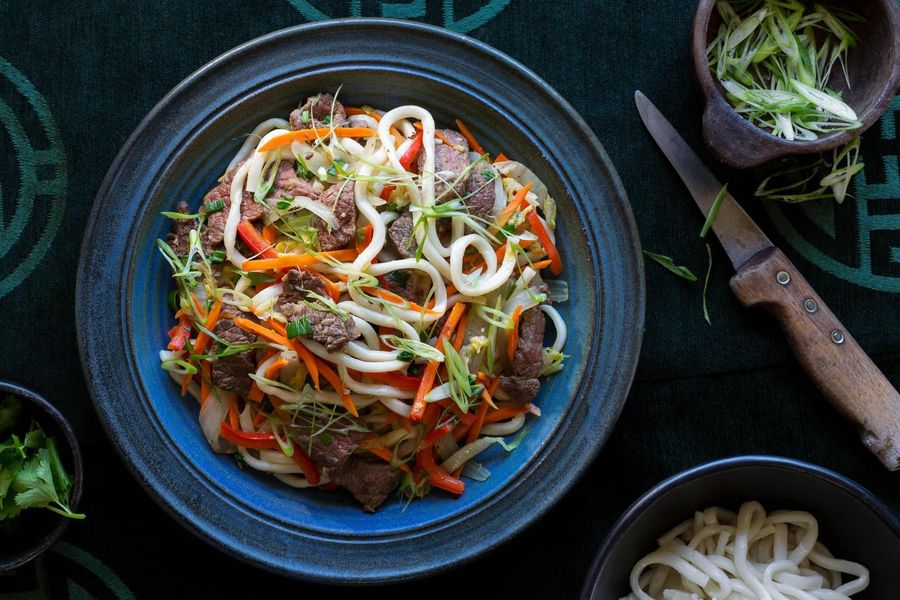

Tsuivan (Mongolian Noodles with Meat and Vegetables)

A recipe for delicious Tsuivan. Handmade noodles are steamed over a bed of stir-fried meat and vegetables for a flavorful one-pot meal.
Total cooking time
🔪 Prep Time: 30 min
🍳 Cook Time: 30 min
⏳ Resting Time: 15 min
⏱ Total Time: 1 hour 15 minutes
🍽 Servings: 4 - 6 Servings
Ingredients
Noodles
2 1/2 cups (320 grams) all-purpose flour plus more for dusting
1 cup (240 milliliters) water
Vegetable oil for rolling and cooking
Tsuivan
1 onion peeled and thinly sliced
8 ounces (250 grams) mutton or beef cut into bite-size pieces
Salt and pepper to taste
2 carrots cut into matchsticks
1 potato peeled and cut into matchsticks
2 cloves garlic peeled and minced
3/4 cup (177 milliliters) water
2 green onions thinly sliced
Instructions
To make the noodles:
Place the flour in a large bowl and make a well in the center. Add the water and mix to combine and form a dough.
On a lightly floured surface, knead the dough well until smooth and elastic. If too sticky to handle, add a little more flour. If too crumbly, add a little water.
Cover with an inverted bowl or wrap in plastic and allow to rest for 15 minutes.
Divide the rested dough into 4 equal pieces. Cover three of the pieces and place one on a lightly floured surface.
Roll the piece of dough into a thin sheet, making sure the bottom does not stick to the surface.
Grease the top of the sheet with about 1 tablespoon of oil, making sure all parts are covered.
Loosely roll the sheet up, long side to long side. Using a sharp knife, quickly cut the roll into strips about 1/4 inch (0.6 cm) wide.
Gently shake the strips loose with your fingers to separate and place on a greased baking sheet or other surface. Repeat with remaining dough.
Alternatively, you can cut the oiled sheet of dough in half, stack on top of each other and lightly pan fry on each side until starting to puff,
but still pliable. Roll the lightly pan-fried sheets up and cut into strips. This way will make the noodles easier to cut and separate. Repeat with remaining
dough and set aside.
To prepare the Tsuivan:
Place a large pan over medium heat and drizzle with about a tablespoon of oil.
Once heated, add the sliced onions and cook, stirring often, until softened.
Stir in the meat, season with salt and pepper, and continue to cook, stirring occasionally, until golden on all sides.
Add the carrots, potatoes, and garlic. Cook until starting to soften.
Pour the water into the pan and bring to a boil. Reduce to a simmer and arrange the sliced noodles around the top, leaving a hole in the center.
Drizzle the tops of the noodles evenly with about 1 tablespoon oil. Cover tightly with a lid and steam the noodles until cooked through, about 15 minutes.
If the water has evaporated before the noodles are finished cooking, pour in a little more water.
Once cooked, remove the lid and gently fan the noodles using a paper fan, the pot lid, or even a cutting board to help dry out the top layer.
Use a fork to gently fluff and separate the noodles, then lightly toss all the ingredients together. Season to taste with salt and pepper and serve immediately
topped with the green onions.